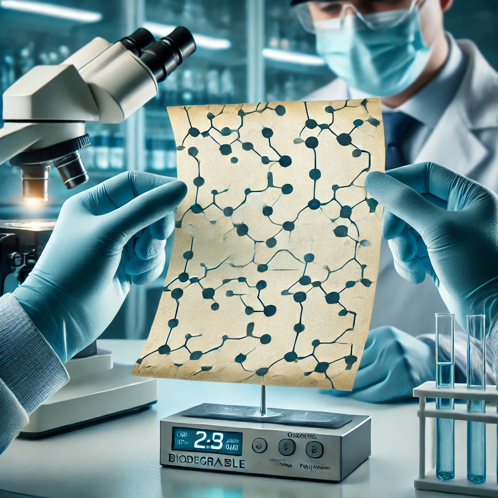

Mariana Vasconcelos
Pesquisadores de uma renomada universidade criaram uma bateria biodegradável feita de papel, abrindo caminho para uma revolução sustentável no armazenamento de energia. O dispositivo utiliza uma tinta especial feita de nanotubos de carbono e eletrodos compostos por polímeros orgânicos, permitindo que a bateria se decomponha sem causar danos ao meio ambiente.
A bateria é composta por uma folha fina de celulose, impregnada com uma tinta especial contendo nanotubos de carbono condutores de eletricidade. No lugar dos eletrodos metálicos tradicionais, os cientistas utilizaram polímeros orgânicos que permitem a condução de íons sem a necessidade de elementos tóxicos.Quando ativada por umidade ou uma pequena corrente elétrica, a bateria gera energia suficiente para alimentar dispositivos de baixo consumo, como sensores ambientais, etiquetas inteligentes e pequenos aparelhos eletrônicos. Após sua vida útil, a bateria pode ser descartada sem risco de poluição, pois seus componentes se decompõem naturalmente no solo ou na água
Embora a bateria de papel seja promissora, os cientistas ainda enfrentam desafios para aumentar sua capacidade de armazenamento de energia e sua durabilidade. Atualmente, sua eficiência é suficiente para dispositivos de baixa potência, mas a equipe trabalha para aprimorar sua tecnologia e torná-la viável para aplicações mais exigentes, como smartphones e laptops.
“Outro desafio é a produção em larga escala. “Estamos em fase de testes para otimizar os custos de fabricação. Nosso objetivo é que essa bateria seja acessível e amplamente adotada pela indústria nos próximos anos”, afirma o pesquisador Felipe Andrade, membro da equipe de desenvolvimento."
Com o avanço dessa tecnologia, a bateria de papel pode representar um passo fundamental para um futuro mais sustentável, reduzindo a poluição eletrônica e promovendo soluções ecológicas para o armazenamento de energia.